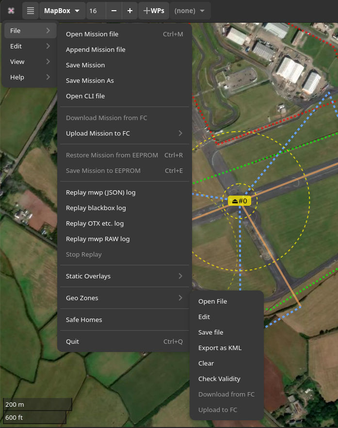
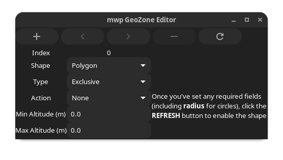
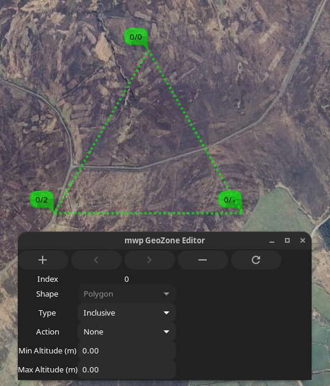
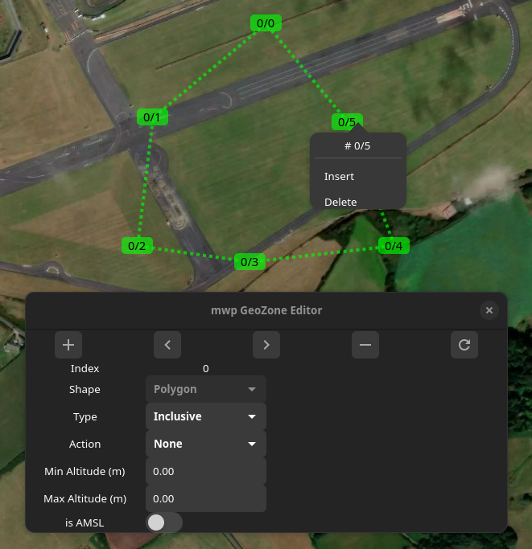
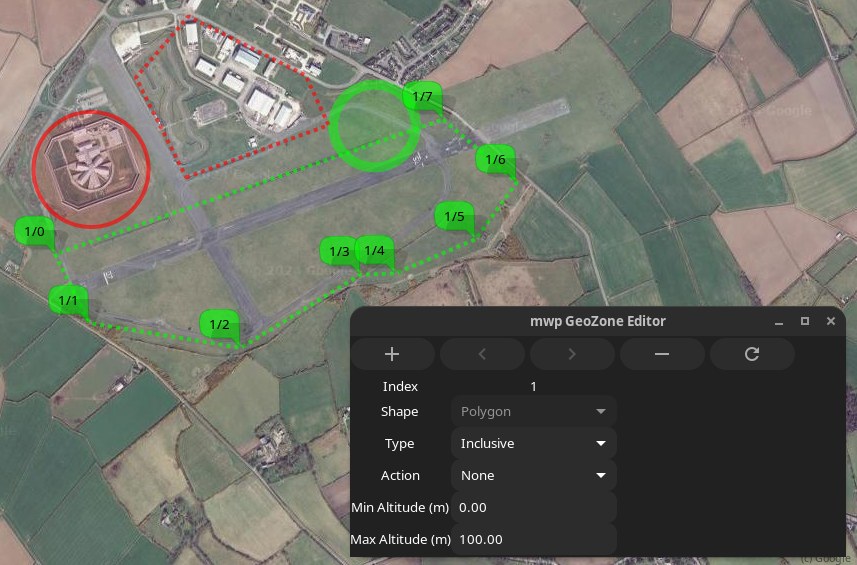

mwp and Geozones#
Introduction#
mwp provides a UI for the Geozones function that first appeared in INAV 8.0.0. The technical details for this feature are published as part of INAV 8.0 INAV Documentation.
Version Requirements
The proposed INAV 8.0 implementation of GeoZones requires mwp 24.11.14 or later.
Geozones provides a set of geographical shapes that the FC can navigate around, characterised by:
-
Shape
- Circular
- Polygon
-
Type
- Exclusive
- Inclusive
-
Action
- None
- Avoid
- Poshold
- RTH
The effect these parameters have on FC behaviour are described in the INAV Documentation.
Geozone Validity and Enforcement#
Zone Geometry#
mwp checks that Geozones conform to the FC's known rules for validity:
- Zones are numbered consecutively from zero and are contiguous.
- Polygon zones are counter-clockwise.
- Polygon zones are "simple" (not "complex") polygon. That means there are no crossing line segments within a single polygon.
mwp provides a "Check Validity" menu option to perform ad-hoc checks. mwp will not permit the upload of an invalid Geozone set to the FC. It is however possible to save a set that mwp claims is invalid in case the user wish to dispute such categorisation with the developer.
Runtime Considerations#
There are a number of runtime recommendations from the Geozone developer:
- If nested inclusive zones are used, ensure that they overlap by at least
2 * loiter radius(orgeozone_mr_stop_distancefor multirotors) horizontally and 50 metres vertically to allow RTH to calculate a proper heading. - When connecting polygonal zones, at least 2 vertices of one zone must be within the over-lapping zone.
mwp does not currently attempt to enforce the runtime recommendations nor warns of their violation.
mwp User interface#
Legacy Images
The majority of images this section are from legacy mwp, however the capability is the same.
Menu options#
mwp adds a Geozones menu option, with suboptions:

Note that the Save, Export, Clear, Download and Upload options are not sensitive if no geozone is loaded. Once a geozone is loaded, some or all of these options will be enabled. The MSP options are only enabled if the FC offers feature GEOZONE with the INAV 8.0 feature value of (1 << 4).
Note that if feature GEOZONE is present, mwp will attempt to load Geozones from the FC if the setting autoload-geozones is true, e.g.:
gsettings set org.stronnag.mwp autoload-geozones true
User Interface#
- Open, Save: Expects a textual definition in INAV CLI format. This may be read from an INAV dif for offline use.
- Export: Exports a loaded Geozone to KML. Geozone specific parameters are stored in the KML such that the original Geozone in CLI notation could be reproduced from the KML.
Editor#
Edit UI Images
The image immediately below represents the current Edit UI (it has the AMSL button); other Edit UI images are from an earlier instance without this button. The altitude values have no bearing on mwp's display of the Geozones, other than in the generated KML.

The icons along the top are:
- "+": Create a new zone
- "<" : Move to previous zone
- ">" : Move to next zone
- "-" : Delete current zone
- "🗘" : Refresh : Refresh display / Start editing new zone
If there is no Geozone loaded, the editor is as shown at the "new zone" state: the "Shape" item is enabled and a note explains how to proceed. Note that to create a circular zone, the radius must be non-zero. If the "Shape" item is set to "Polygon", then no radius is required to proceed.

Once the required details have been entered, pressing refresh draws the template shape. circle has a dragable centre and editable radius.

A polygon has 3 points (the mimimum), each of which can be dragged.

Additional points can be added immediately in front of an existing point from the right mouse menu.

With multiple zones loaded (or created), the user can switch between zones using the < and > icons.

Example validation#
In the following image, from left to right
| Zone Id | Colour | Characteristics | Validity |
|---|---|---|---|
| 0 | Red | Counter-clockwise | Valid |
| 1 | Green | Clockwise | Invalid |
| 2 | Red, fill | Counter-clockwise, "complex" | Invalid |
| 3 | Green, fill | Counter-clockwise, concave | Valid |
Invalid zones are reported with the "Check Valdity" or "Upload to FC" options.

Zone Colours#
mwp sets line and fill characteristics for GeoZones according to the zone's type and action.
The default values are set as:
| Type | Action | Line | Fill |
|---|---|---|---|
| Exclusive | None | red 4 4 | |
| Exclusive | Avoid | red 4 | red |
| Exclusive | PosHold | red 10 | red |
| Exclusive | RTH | red 10 | red |
| Inclusive | None | green 4 4 | |
| Inclusive | Avoid | green 4 | |
| Inclusive | PosHold | green 10 | |
| Inclusive | RTH | green 10 | green |
The values after the line colour are line width and optional dash width.
The default colours are those suggested by the user who requested that mwp support GeoZones.
The default "red" and "green" colours have some opacity set:
| Type | Value |
|---|---|
| Line red | rgba(255,0,0,0.625) |
| Fill red | rgba(255,0,0,0.125) |
| Line green | rgba(0,255,0,0.625) |
| Fill green | rgba(0,255,0,0.125) |
Where line width is greater than 10, the opacity is further reduced by 20% to satisfy the author's aesthetic opinion.
User definition#
The user may specify their own colours by creating a pipe separated file, $HOME/.config/mwp/zone_colours. This is a text file of the format:
type|action|line_colour|line_width|line_dash|fill_colour
User definition fields:#
Type: The zone type as an integer (0-1 : Exclusive / Inclusive)
Action: The zone action as an integer (0-3 : None / Avoid / Poshold / RTH).
Line Colour: see below for colour formats
Line Width: In pixels, as an integer
Line Dash: In pixels, as an integer; the line will alternate on/off using this value.
Fill Colour: see below for colour formats
Colour defintion#
Colours may be defined as:
- A "standard" name (taken from the X11 "rgb.txt" file) ; or
- A hexadecimal value in the form
#rrggbbor#rrggbbaa; or - A RGB colour in the form
rgb(r,g,b)); orrgba(r,g,b,a)
Where r, g, b and a are respectively the red, green, blue and alpha colour values. In the "rgb()" format, r, g, and b are either integers in the range 0 to 255 or percentage values in the range 0% to 100%, and a is a floating point value in the range 0 to 1.
If the alpha component is not specified then it is set to be fully opaque.
For "standard X11 names", an opacity may be defined by appending a floating point value in the range 0 to 1.0 to the name, separated by a semi-colon, for example steelblue;0.8
Example: default settings as zone_colours file#
The default settings can be represented in a zone_colours file as:
0|0|rgba(255,0,0,0.625)|4|4|
0|1|rgba(255,0,0,0.625)|4|0|rgba(255,0,0,0.125)
0|2|rgba(255,0,0,0.625)|10|0|rgba(255,0,0,0.125)
0|3|rgba(255,0,0,0.625)|10|0|rgba(255,0,0,0.125)
1|0|rgba(0,255,0,0.625)|4|4|
1|1|rgba(0,255,0,0.625)|4|0|
1|2|rgba(0,255,0,0.625)|10|0|
1|3|rgba(0,255,0,0.625)|10|0|rgba(0,255,0,0.125)
Where fill is not required, it is left blank.
If a line cannot be parsed, an error will the logged, giving the offending line number(s).
Blank lines and comment lines (starting with # or ;) are ignored.
Please also note that floating point values must be specified with a point (.), even when the locale customary format would use comma (,).
Alternate colour expressions for the first line above are therefore:
0|0|red;0.625|4|4|
0|0|#ff0000a0|4|4|